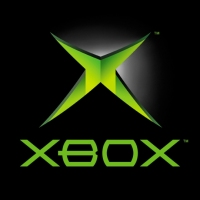
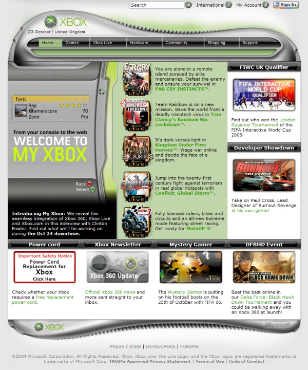
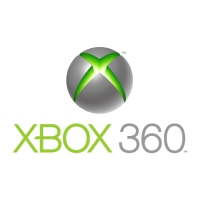
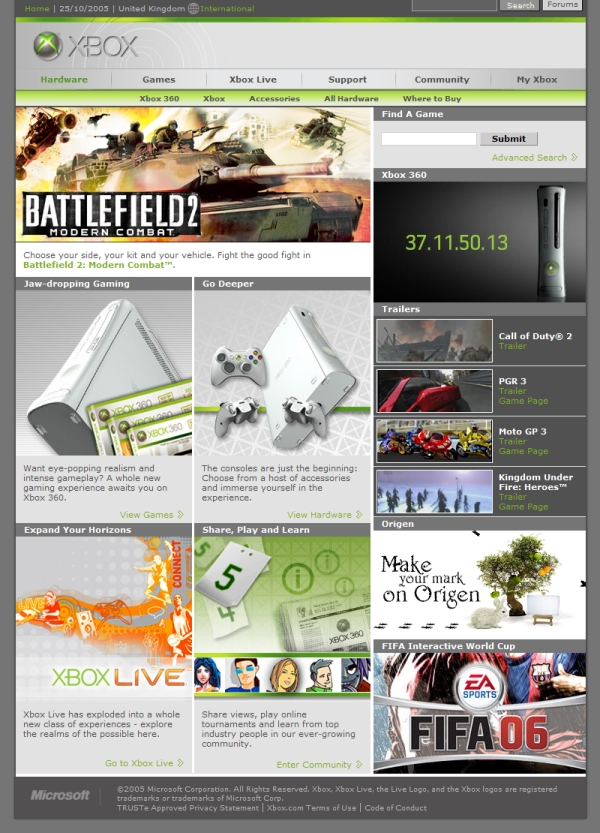

Xbox.com Relaunch
After twenty four hours of downtime Xbox.com is back and better than ever with new layout and content for Xbox 360
By CESPage.com Xbox, Published 25th October 2005
Xbox.com
With the release of the Xbox 360 almost here, the online services from Microsoft have been re-launched. Xbox Live was taken off line throughout
the 24th of October to upgrade it for the new Xbox 360 features such as achievements and Gamerscore and other Xbox Live features for the new console
when it is launched in a few weeks time. The most obvious update will is the brand new Xbox.com with a new layout and content for the Xbox 360,
it is a major departure from the previous layout.
The old Xbox.com was mainly designed for just one console so with the release of the Xbox 360 a brand new layout was required and this is what has been
implemented, featuring information about the Xbox and Xbox 360 consoles so that owners of both or either console can get the information, product support
and details they need.

Brand new features
Xbox.com now features information about Xbox and Xbox 360 Hardware and Games with content specific to regions such as pricing and available items for
the new console, the Xbox 360. You can read about the accessories for the Xbox 360 including controllers and additional items including product shots
and packaging shots of all the latest hardware.
Also Xbox.com will in a week's time feature some new features including "My Xbox" where gamers can access their Gamer Card, Forums, Friends List and
Achievements online. All Xbox owners will have some of these features the Achievements and Xbox Live Gold and Silver is for Xbox 360 only.
The gamer card for the Xbox 360 can show the games played and achievements obtained, players can compare their achievements and scores with other
players online.
